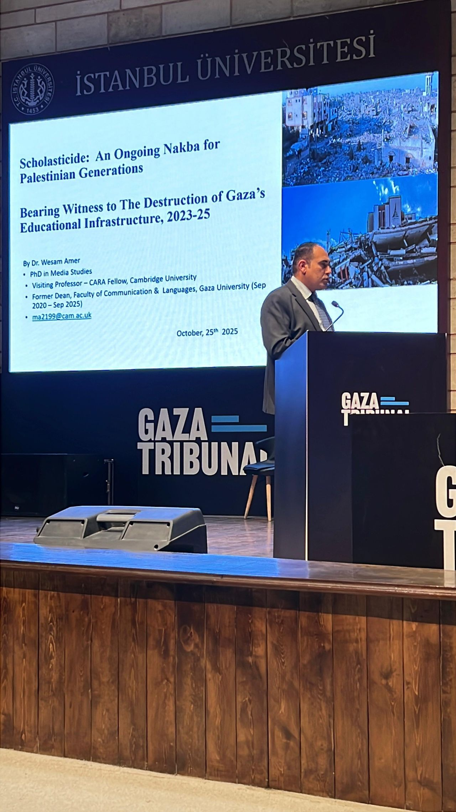
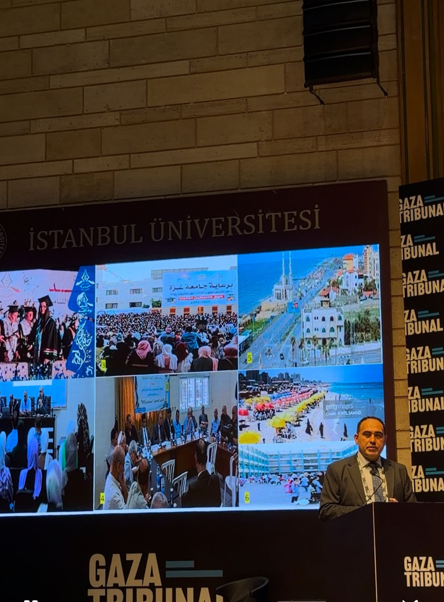

Conferences & Events
Gaza Tribunal Hears Evidence on Scholasticide and the Destruction of Palestinian Knowledge Systems
Dr. Wesam Amer participated in the Gaza Tribunal in Istanbul, presenting evidence and analysis on scholasticide, the systematic destruction of Palestinian educational institutions and intellectual life. His contribution highlighted the impact of attacks on universities, knowledge production, and academic communities, while calling for stronger international action to protect education and academic freedom.
Dr. Wesam Amer participated in the Gaza Tribunal, held in Istanbul between 23 and 27 October 2025, where academics, legal experts, human rights advocates, and international scholars gathered to examine the consequences of the war on Gaza and its implications for international justice and accountability. The tribunal's final session brought together testimony, expert analysis, and evidence across multiple thematic areas, including international law, world order, health, education, and human rights.
During the proceedings, Dr. Amer focused on the concept of scholasticide, a term used to describe the systematic destruction of educational institutions, knowledge systems, and intellectual life. His intervention examined how attacks on universities, schools, libraries, archives, researchers, and academic communities affect not only current generations but also the long-term capacity of societies to preserve and produce knowledge.
Dr. Amer argued that while international legal frameworks have traditionally focused on physical and biological destruction, increasing attention must be paid to attacks targeting a people's intellectual and cultural foundations. He emphasized that the destruction of educational infrastructure extends beyond material damage, affecting collective memory, cultural continuity, and the future development of society.
His contribution framed the issue as a global academic concern rather than a local or regional one. According to Dr. Amer, universities and research institutions worldwide face an important responsibility in defending academic freedom, supporting endangered scholars, and ensuring the continuity of knowledge production in conflict-affected environments.
The Gaza Tribunal examined a broad range of issues affecting Palestinian society, including the destruction of civilian infrastructure, healthcare systems, housing, and educational institutions. Participants sought to document evidence, provide expert assessments, and contribute to ongoing international discussions regarding accountability and justice.
The event concluded with calls for stronger international academic solidarity, reconstruction of educational institutions, and expanded support for scholars and students whose ability to teach, learn, and conduct research has been disrupted by conflict.
Gaza Tribunal programme → Gaza Tribunal final session → safa.news → Daily Sabah →


